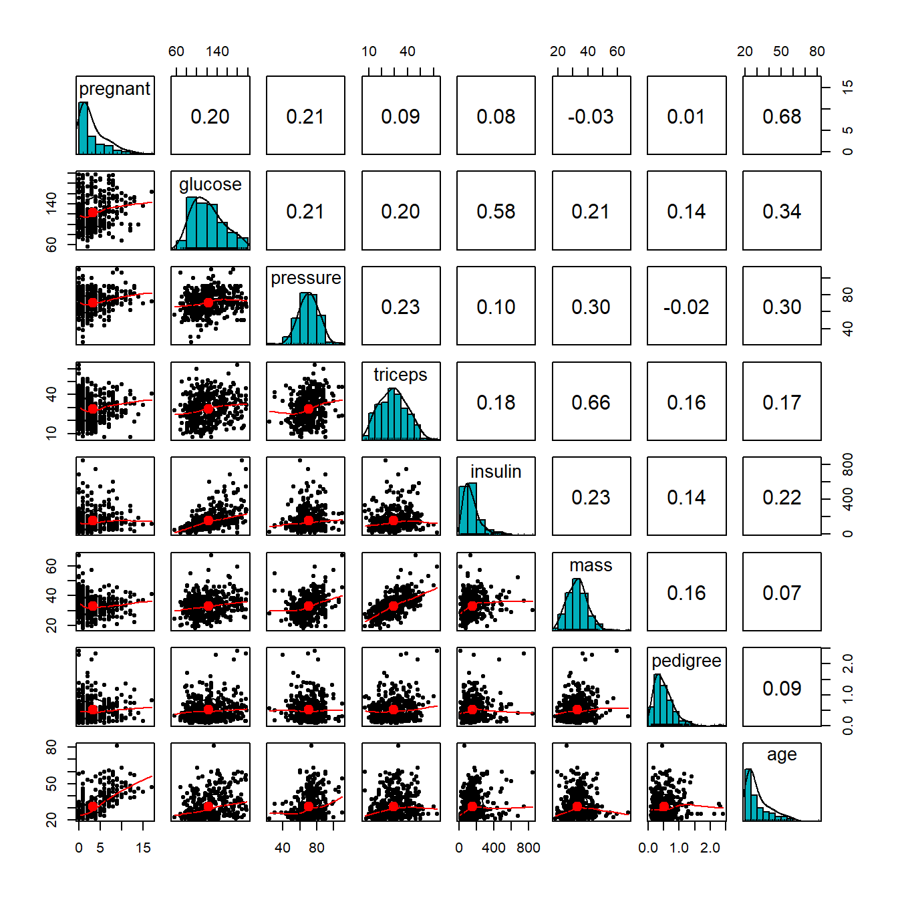
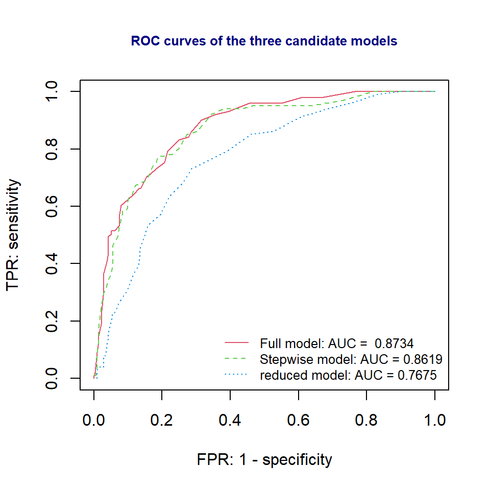

Topic 11 Predictive Modeling with Logistic Regression
The logistic regression model as a member of the family of the generalized linear regression model has the following form.
Let \(Y\) be the binary response variable and \(\{x_1, x_2, \cdots, x_n \}\) be the set of predictor variables. If \(Y\) takes on either 1 or 0, the multiple logistic regression model is then defined as
\[ \frac{E[Y]}{1-E[Y]} = \beta_0 + \beta_1x_1 + \beta_2 x_2 + \cdots + \beta_kx_k \]
The success probability function
\[ p(x_1, x_2, \cdots, x_k)=P(Y=1|x_1, x_2, \cdots, x_k) =\frac{\exp(\beta_0 + \beta_1x_1 + \beta_2 x_2 + \cdots + \beta_kx_k)}{1+\exp(\beta_0 + \beta_1x_1 + \beta_2 x_2 + \cdots + \beta_kx_k)} \]
If \(Y\) takes on character values, R uses chooses the alphabetically higher value to model the above probability. For example, if \(Y\) = “diseased” or “disease-free”, by default, the logistic regression will be defined as
\[ p(x_1, x_2, \cdots, x_k)=P(Y= \text{disease-free}|x_1, x_2, \cdots, x_k) =\frac{\exp(\beta_0 + \beta_1x_1 + \beta_2 x_2 + \cdots + \beta_kx_k)}{1+\exp(\beta_0 + \beta_1x_1 + \beta_2 x_2 + \cdots + \beta_kx_k)} \]
We can also redefine the factor level of the response variable to model the probability of the desired category.
In the previous module, we introduced the strategies for searching the final model using both manual and automatic variable selection approaches using likelihood-based performance metrics. However, in predictive modeling, the classical model search strategies might not work satisfactorily. It is a common practice to use data-driven and algorithm-based approaches to assess the predictive performance of a predictive model or an algorithm.
In the following sections, we assume that a set of several candidate models/algorithms have already been developed. The candidate models and algorithms include logistic regression models and other algorithms such as tree-based algorithms, neural nets, support vector machines, etc. The objective is to use various methods to choose the one with the best predictive power to implement in real-world applications.
11.1 Cross-Validation in Predictive Modeling
In classical statistical modeling, we evaluate the predictive performance of a model using the large sample theory developed based on the likelihood. However, in algorithm-based predictive modeling, we don’t assume the distribution of the population or the underlying population is uncertain. In other words, there is no general theory that can derive the predictive performance. Therefore, data-driven methods are used to define the goodness of the model. The key is to hold up a portion of the sample as “unseen” observations to test the actual performance of the predictive models and algorithms.
11.1.1 The Logic of the Three-way Split
The general idea is to randomly partition the data into several subsets for different purposes. One of them will be used to build the model, one is used to validate the model, and one is used as “unseen real-world” data to report the “actual” performance of the final model.
Figure 11.1: Three-way splitting mechanism
With this three-way split, the model selection and the true error rate computation can be carried out simultaneously. One important observation is that the error rate estimate of the final model on validation data is, in general, underestimated since the validation set is used to select the final model. Therefore, a third independent part of the data, the test data, is needed to report the actual prediction performance.
After the performance of the final model was evaluated on the test set, all estimated parameters of the model based on the training data must not be changed any further.
The three-way splitting method may face practical challenges such as the insufficiency of the data and variation of the error estimate based on a single-step process of model development. To overcome these potential challenges, researchers and practitioners developed resampling-based cross-validation (CV) methods to combine training, validating, and testing in an iterative process. The following subsection outlines this
11.1.2 Cross-validation (CV)
Among the methods available for estimating prediction error, the most widely used is cross-validation. Contrary to most people who thought that CV was developed by machine learning researchers, it was developed by statisticians. The idea was initially formulated in the 1930s and formally published in statistics literature in the 1970s. Maybe due to computational constraints, the cross-validation methods have not been used by the statistics community. Recently, machine learning researchers dug this old but gold algorithm out for assessing the performance of predictive modeling and algorithms.
Figure 11.2: Three-way data splitting versus cross-validation
Essentially cross-validation includes techniques to split the sample into multiple training and test data sets. To obtain multiple training and testing subsets, we use various random sub-sampling methods to perform K data splits of the entire sample. Different random splits constitute different cross-validation methods. The most commonly used cross-validation method is k-fold cross-validation.
The following are steps for choosing the final working model from a set of candidate models using the cross-validation method.
Step 1: Split the entire data into a training set and a testing set.
Step 2: Perform the cross-validation in the training set and don’t touch the test data.
- step 2.1. Randomly split the training set into k subsets with equal size, say,\(F_1\), \(F_2\), \(\cdots\), \(F_k\).
- step 2.2. hold up \(F_i\) and combine \(T_i =\{\)\(\cdots\), \(F_{i-1}\), \(F_{i+1}\), \(\cdots\) \(\}\). Fit all candidate models to \(T_i\) and then use the fitted model to predict the response using the testing set \(F_i\), for \(i=1, 2, \cdots, k\).
- step 2.3. Since the actual response values are available in the test set \(F_i\), we can compare the predicted response value with the true response values to calculate the predictive error for each candidate model in each of the k-rounds.
Step 3: Calculate the average of the predictive errors for each candidate model. The one with the smallest average predictive error is the winner.
Step 4: Fit the winner to the entire training set \(\{F_1, F_2, \cdots, F_k\}\) to obtain the final working model.
Step 5: Report the actual predictive error using the testing data set that has not been used in the above cross-validation process.
The above process is summarized in the following figure.
Figure 11.3: The workflow of the cross-validation process
Remarks on the cross-validation.
The proportions of the training and testing sets are determined by modelers. 75%:25% is a commonly used ratio.
The number of folds used in the cross-validation is the hyper-parameter or tuning-parameter. The 10-fold cross-validation is commonly used. The reason 10-fold is commonly used is that when \(k \ge 10\), the predictive errors in the training and testing become stable.
11.2 Predictive Performance Measures
Most of the predictive performance measures are defined based on the predictive errors in logistic modeling.
11.2.1 Error-based Measures
We introduced two sets of conditional probabilities using clinical language in the previous module. As an analogy, we can think about the logistic predictive model to be a diagnostics test for predicting a specific disease. Note that what the logistic model predicted is the probability of having a disease. In order to predict the value ( T+ = “predicted disease” or T- = “predicted no-disease”) of the binary response, we need to use a cut-off probability to define “T+” and “T-”. In most software programs, 0.5 was used. If the success probability is greater than 0.5, the predicted value of the response will be “T+”, otherwise, the predicted response value will be “T-”.
Since each of the hold-up validating set has the true values of the response, we then can use corresponding predicted values based on a selected cut-off probability to make a two-way table in the following form
| Actual pos | Actual neg | |
|---|---|---|
| Predict pos | a (TP) | b (FP) |
| Predict neg | c (FN) | d (TN) |
The above two-way contingency table is called the confusion matrix which can be used to estimate the following four performance measures introduced in the previous module.
Sensitivity: \[TPR = \widehat{P( T+ | D+)} = TP/(TP+FN)\]
Specificity: \[TNR = \widehat{P( T- | D-)}=TN/(TN+FP)\]
False Negative Rate: \[FNR = \widehat{P( T- | D+)} = FN/(TP+FN)\]
False Positive Rate: \[\widehat{P( T+ | D-)}=FP/(FP+TN)\]
Ideally, a good binary predictive model such as the logistic regression model should have a high sensitivity and specificity and a low false negative rate and false-positive rate (FPR, also called false alarm rate).
The overall accuracy is defined by
\[ \text{accuracy} = (TP + TN)/(TP+TN+FP+FN) \]
and the predictive error (PE) is defined by
\[ PE = (FP + FN)/(TP+FP+TN+FN). \]
The above PE was used in the iterations of the process of cross-validation for a binary predictive model. In the logistic regression model, the confusion matrix is dependent on the choice of the cut-off probability. In other words, the values of the above 6 measures are dependent on the choice of the cut-off probability. Therefore, the above performance metrics are called local performance measures.
Remarks
The default choice of 0.5 in most software programs may not be the optimal choice.
The “disease” probability is a continuous variable on [0,1], we can search the optimal cut-off probability by plotting the cut-off probability against the accuracy and then find the optimal cut-off from the plot.
11.3 Measuring Global Performance - ROC Curve
In many practical applications, we may have different candidate models that behaved differently from different perspectives. For example, (1). how to report the performance of a medical diagnostic test if it is dependent on the age of the patient? (2). If there are two tests and both are dependent on the age of patients, how to compare the performance of the two tests? (3). sometimes the costs of false positive and false negative rates are very different in a specific application, how to minimize the cost due to errors? These questions can be addressed using the Receiver Operating Characteristics (ROC) analysis.
11.3.1 ROC Curve
An ROC curve is the plot of sensitivity (i.e., TPR = True Positive Rate) against (1-specificity) = False Positive Rate (FPR). Drawing the ROC curve is straightforward. We only need to choose a sequence of cut-off probability and then calculate the corresponding TPR and FPR. Then we can plot these points to get the ROC curve which is similar to the following figure.
Figure 11.4: An illustrative ROC curve
Using the same set of cut-off probabilities, different candidate models have different ROC curves. The area under the curve (AUC) reflects the global goodness of the model. See the following illustrative curve.
Figure 11.5: Illustrative comparison of multiple ROC curves associated with the corresponding candidate models
With the ROC curve, we can answer the questions in the opening paragraph of this section.
11.3.2 Area Under The Curve (AUC)
If two or more ROC curves intersect at least one point, we may want to report the area under the curves (AUC) to compare the global performance between the two corresponding models. See the illustrative example below.
Figure 11.6: Using ROC for model selection.
There are several R packages that have functions to calculate the AUC. We are going use R functions roc() and auc() in package pROC to calculate the AUC in the case study.
11.4 Case Study - Diabetes Prediction with Logistic Regression
In this case study, we still use the diabetes data that was used in the last module.
11.4.1 Data and Variable Descriptions
There are 9 variables in the data set.
pregnant: Number of times pregnant
glucose: Plasma glucose concentration (glucose tolerance test)
pressure: Diastolic blood pressure (mm Hg)
triceps: Triceps skinfold thickness (mm)
insulin: 2-Hour serum insulin (mu U/ml)
mass: Body mass index (weight in kg/(height in m)^2)
pedigree: Diabetes pedigree function
age: Age (years)
diabetes: Class variable (test for diabetes)
I load the data from R library{mlbench} in the following code. For convenience, I delete all records with missing values and keep only the records with complete records in this case study. The final analytic data set has 392 records. This
11.4.2 Research Question
The objective of this case study is to build a logistic regression model to predict diabetes using various risk factors associated with the individual patient.
11.4.3 Exploratory Analysis
We first make the following pairwise scatter plots to inspect the potential issues with predictor variables.
##
## 载入程辑包：'psych'## The following objects are masked from 'package:scales':
##
## alpha, rescalepairs.panels(diabetes[,-9],
method = "pearson", # correlation method
hist.col = "#00AFBB",
density = TRUE, # show density plots
ellipses = TRUE # show correlation ellipses
)
From the correlation matrix plot, we can see several patterns in the predictor variables.
- All predictor variables are unimodal. But pregnant and age are significantly skewed. we discretize pregnant and age in the following.
preg = diabetes$pregnant
grp.preg = preg
grp.preg[preg %in% c(4:6)] = "4-6"
grp.preg[preg %in% c(7:9)] = "7-9"
grp.preg[preg %in% c(10:17)] = "10+"
##
age = diabetes$age
##
grp.age = age
grp.age[age %in% c(21:24)] = "21-25"
grp.age[age %in% c(25:30)] = "25-30"
grp.age[age %in% c(31:40)] = "31-40"
grp.age[age %in% c(41:50)] = "41-50"
grp.age[age %in% c(51:99)] = "50 +"
## added to the diabetes data set
diabetes$grp.age = grp.age
diabetes$grp.preg = grp.pregA moderate correlation is observed in several pairs of variables: age v.s. pregnant, glucose v.s. insulin, and triceps v.s. mass. We will not drop any of these variables. We will standardize these variables. Part of the correlation may be removed after they are standardized.
11.4.4 Standizing Numerical Predictor Variables
Since this is a predictive model, we don’t worry about the interpretation of the coefficients. The objective is to identify a model that has the best predictive performance.
## standardizing numerical variables
diabetes$sd.glucose = (diabetes$glucose-mean(diabetes$glucose))/sd(diabetes$glucose)
diabetes$sd.pressure = (diabetes$pressure-mean(diabetes$pressure))/sd(diabetes$pressure)
diabetes$sd.triceps = (diabetes$triceps-mean(diabetes$triceps))/sd(diabetes$triceps)
diabetes$sd.insulin = (diabetes$insulin-mean(diabetes$insulin))/sd(diabetes$insulin)
diabetes$sd.mass = (diabetes$mass-mean(diabetes$mass))/sd(diabetes$mass)
diabetes$sd.pedigree = (diabetes$pedigree-mean(diabetes$pedigree))/sd(diabetes$pedigree)
## drop the original variables except for the response variable
sd.diabetes = diabetes[, -(1:8)]Remark: If the final model is used for real-time prediction, we need to write a separate function to perform all variable transformations and modifications before feeding it to the model for prediction.
11.4.5 Data Split - Training and Testing Data
We randomly split the data into two subsets. 70% of the data will be used as training data. We will use the training data to search the candidate models, validate them and identify the final model using the cross-validation method. The 30% of the hold-up sample will be used for assessing the performance of the final model.
11.4.6 Best Model Identification
In the previous module, we introduced full and reduced models to set up the scope for searching for the final model. In this case study, we use the full, reduced, and final models obtained based on the step-wise variable selection as the three candidate models.
For illustration, we use 0.5 as the common cut-off for all three models to define the predicted. In a real application, we may want to find the optimal cut-off for each candidate model in the cross-validation process.
11.4.6.1 Cross-Validation for Model Identification
Since our training data is relatively small, I will use 5-fold cross-validation to ensure the validation data set has enough diabetes cases.
library(MASS)
library(knitr)
## 5-fold cross-validation
k=5
## floor() function must be used to avoid producing NA in the subsequent results
fold.size = floor(dim(train)[1]/k)
## PE vectors for candidate models
PE1 = rep(0,5)
PE2 = rep(0,5)
PE3 = rep(0,5)
for(i in 1:k){
## Training and testing folds
valid.id = (fold.size*(i-1)+1):(fold.size*i)
valid = train[valid.id, ]
train.dat = train[-valid.id,]
## full model
candidate01 = glm(diabetes ~grp.preg + sd.glucose +sd.pressure+ sd.triceps + sd.insulin +
sd.mass + sd.pedigree + grp.age, family = binomial(link = "logit"),
data = train.dat)
## reduced model
candidate03 = glm(diabetes ~ sd.insulin + sd.mass + sd.pedigree,
family = binomial(link = "logit"),
data = train.dat)
##
candidate02 = stepAIC(candidate01,
scope = list(lower=formula(candidate03),upper=formula(candidate01)),
direction = "forward", # forward selection
trace = 0 # do not show the details
)
## predicted probabilities of each candidate model
pred01 = predict(candidate01, newdata = valid, type="response")
pred02 = predict(candidate02, newdata = valid, type="response")
pred03 = predict(candidate03, newdata = valid, type="response")
pre.outcome01 = ifelse(as.vector(pred01) > 0.5, "pos", "neg")
pre.outcome02 = ifelse(as.vector(pred02) > 0.5, "pos", "neg")
pre.outcome03 = ifelse(as.vector(pred03) > 0.5, "pos", "neg")
PE1[i] = sum(pre.outcome01 == valid$diabetes )/length(pred01)
PE2[i] = sum(pre.outcome02 == valid$diabetes )/length(pred02)
PE3[i] = sum(pre.outcome02 == valid$diabetes )/length(pred03)
}
avg.pe = cbind(PE1 = mean(PE1), PE2 = mean(PE2), PE3 = mean(PE3))
kable(avg.pe, caption = "Average of prediction errors of candidate models")| PE1 | PE2 | PE3 |
|---|---|---|
| 0.7612903 | 0.7612903 | 0.7612903 |
The average predictive errors show that candidate models 1 and 2 have the same predictive error. Since model 2 is simpler than model 1, we choose model 2 as the final predictive model. This selection of the final model is based on the cut-off probability 0.5.
11.4.6.2 Final Model Reporting
The previous cross-validation procedure identified the best model with pre-selected cut-off 0.5. The actual accuracy to be report to the client MUST be based on the withheld test data. Therefore, the actual accuracy of the final model is given by
pred02 = predict(candidate02, newdata = test, type="response")
pred02.outcome = ifelse(as.vector(pred02)>0.5, "pos", "neg")
accuracy = sum(pred02.outcome == test$diabetes)/length(pred02)
kable(accuracy, caption="The actual accuracy of the final model")| x |
|---|
| 0.8076923 |
Therefore, the final model has an accuracy rate given in the above table.
Remark: Since we used a random split method to define the training and testing data when re-running the code, the performance metrics will be slightly different.
11.4.7 ROC Analysis - Global Performance
The ROC curve as a visual tool is used to compare the global performance of binary predictive models. Since it is used for the purpose of model selection, we need to construct ROC curves based on the training data. Next, we will construct ROC curves and calculate the corresponding AUCs using package pROC.
We first estimate the TPR (true positive rate, sensitivity) and FPR (false positive rate, 1 - specificity) at each cut-off probability for each of the three candidate models using the following R function.
## A function to extract false positive and false negative rates
TPR.FPR=function(pred){
prob.seq = seq(0,1, length=50) # 50 equally spaced cut-off probabilities
pn=length(prob.seq)
true.lab=as.vector(train$diabetes)
TPR = NULL
FPR = NULL
##
for (i in 1:pn){
pred.lab = as.vector(ifelse(pred >prob.seq[i],"pos", "neg"))
TPR[i] = length(which(true.lab=="pos" & pred.lab=="pos"))/length(which(true.lab=="pos"))
FPR[i] = length(which(true.lab=="neg" & pred.lab=="pos"))/length(which(true.lab=="neg"))
}
cbind(FPR = FPR, TPR = TPR)
}The ROC curves of the three candidate models are given below.
## we need a function to calculate the AUC.
if (!require("pROC")) {
install.packages("pROC")
library(pROC)
}
## candidate models
## full model
candidate01 = glm(diabetes ~grp.preg + sd.glucose +sd.pressure+ sd.triceps + sd.insulin +
sd.mass + sd.pedigree + grp.age, family = binomial(link = "logit"),
data = train)
## reduced model
candidate03 = glm(diabetes ~ sd.insulin + sd.mass + sd.pedigree,
family = binomial(link = "logit"),
data = train)
##
candidate02 = stepAIC(candidate03,
scope = list(lower=formula(candidate03),upper=formula(candidate01)),
direction = "forward", # forward selection
trace = 0 # do not show the details
)
## predicted probabilities
pred01 = predict.glm(candidate01, newdata = train, type="response")
pred02 = predict.glm(candidate02, newdata = train, type="response")
pred03 = predict.glm(candidate03, newdata = train, type="response")
####
## ROC curve
plot(TPR.FPR(pred01)[,1], TPR.FPR(pred01)[,2],
type="l", col=2, lty=1, xlim=c(0,1), ylim=c(0,1),
xlab = "FPR: 1 - specificity",
ylab ="TPR: sensitivity",
main = "ROC curves of the three candidate models",
cex.main = 0.8,
col.main = "navy")
lines(TPR.FPR(pred02)[,1], TPR.FPR(pred02)[,2], col=3, lty=2)
lines(TPR.FPR(pred03)[,1], TPR.FPR(pred03)[,2], col=4, lty=3)
##
category = train$diabetes == "pos"
ROCobj01 <- roc(category, as.vector(pred01))
ROCobj02 <- roc(category, as.vector(pred02))
ROCobj03 <- roc(category, as.vector(pred03))
AUC01 = round(auc(ROCobj01),4)
AUC02 = round(auc(ROCobj02),4)
AUC03 = round(auc(ROCobj03),4)
##
legend("bottomright", c(paste("Full model: AUC = ",AUC01),
paste("Stepwise model: AUC =",AUC02),
paste("reduced model: AUC =", AUC03)),
col=2:4, lty=1:3, cex = 0.8, bty="n")
We can see from the ROC curve that full model and the stepwise model are better than the reduced model. However, the full model and the stepwise model have similar ROC curve and AUCs. Since stepwise model is simpler than the full model, therefore, the final model to report to the client is the stepwise model.
The accuracy measure of the stepwise model based one the test data has been reported in the earlier section.
11.5 Analysis Assignment
This assignment focuses on binary predictive modeling using the logistic regression model. I used the same data set that was used in the previous few weeks to build a logistic predictive model for predicting the occurrence of diabetes.
You are expected to use the same data set you used in the three of your assignment to build a predictive logistic regression model.
The write-up of your assignment should be the same as my case study. To be more specific, you are expected to use my case study as a template to complete this assignment. The following are the major components I expected you to include in your report.
Introduction - description of what you plan to do in the analysis
Description of data and variables
information on the data collection process.
list of variable names and definitions.
Research question(s) - what is the objective of the analysis
Variable transformation and discretization
list the numerical variables you standardize
list of the variable you discretize
Data split - the proportions of data for training and testing sets
Candidate models - you can the candidate model you used in the previous assignment on the multiple logistic regression model.
The final model selection
Cross-validation method
ROC approach (This is optional)